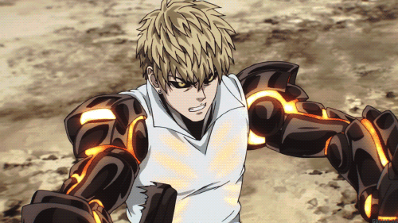

Saitama - o protagonista conhecido como One Punch Man.

Genus - um ciborgue que se torna o aprendiz de Saitama.
Mummer Rider - um herói sem superpoderes, mas com grande determinação.

"Eu não sinto mais emoção" é um edit sobre Saitama, personagem de One Punch Man. Ele apresenta imagens e músicas relacionadas ao tema.